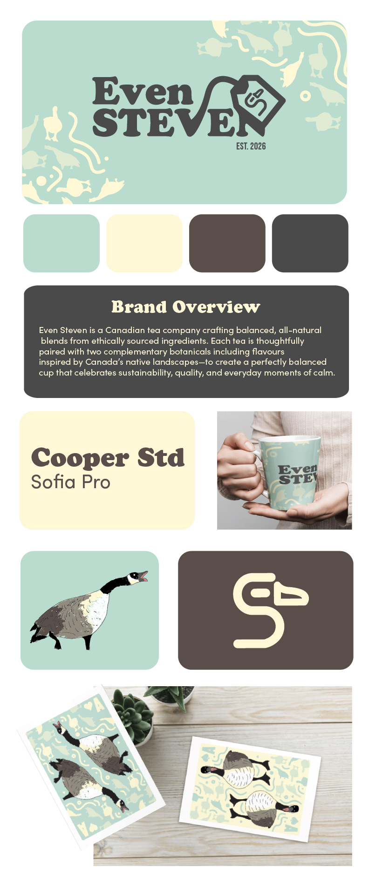
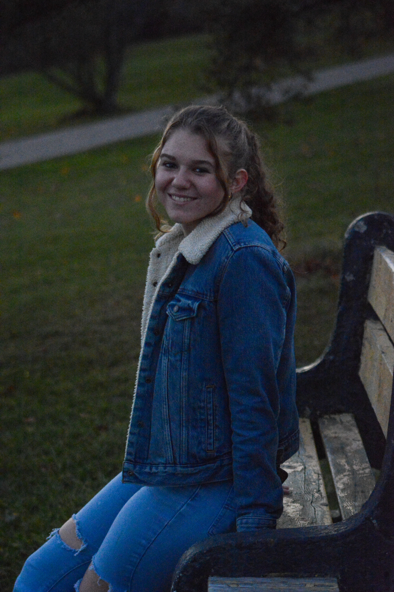

GBDA · University of Waterloo · 2026
Graphic design, photography & video
A portfolio of work reflecting inspiration of ancient civilizations, atheltics and human connection.
View the workGraphic Design
Everyone Has a Part to Play
Graphic Design · Branding
Even Steven — Tea Company Branding
Graphic Design
Illumination Magazine Spread
Graphic Design
Dr. Martens Icon Set
Graphic Design · Poster Series
Inspiration Posters
Photography
Sports Photography
Photography
Environment
Photography
Lights
Photography
People
Video
Friday Night Lights Recap
Video
School Athletics Promotion
Video
Not Alone Trailer


Sophia Cober is a Global Business and Digital Arts student at the University of Waterloo with a passion for visual storytelling. Working across graphic design, photography, and video, she enjoys creating work that is both purposeful and visually engaging.
Her fascination with ancient civilizations has shaped much of her creative perspective, inspiring the use of symbolism, typography, and historical references throughout her work. Outside of design, much of her photography and filmmaking centres around athletics, community, and the people who inspire her, reflecting her belief that the strongest creative work begins with genuine human connection.
Sophia is always looking for opportunities to learn, collaborate, and challenge herself through meaningful creative projects, with the goal of designing work that communicates ideas, tells stories, and leaves a lasting impression.
Whether you have a project in mind, want to collaborate, or just want to talk about ancient visual culture and contemporary design — I'd love to hear from you.
sophia.cober@gmail.com